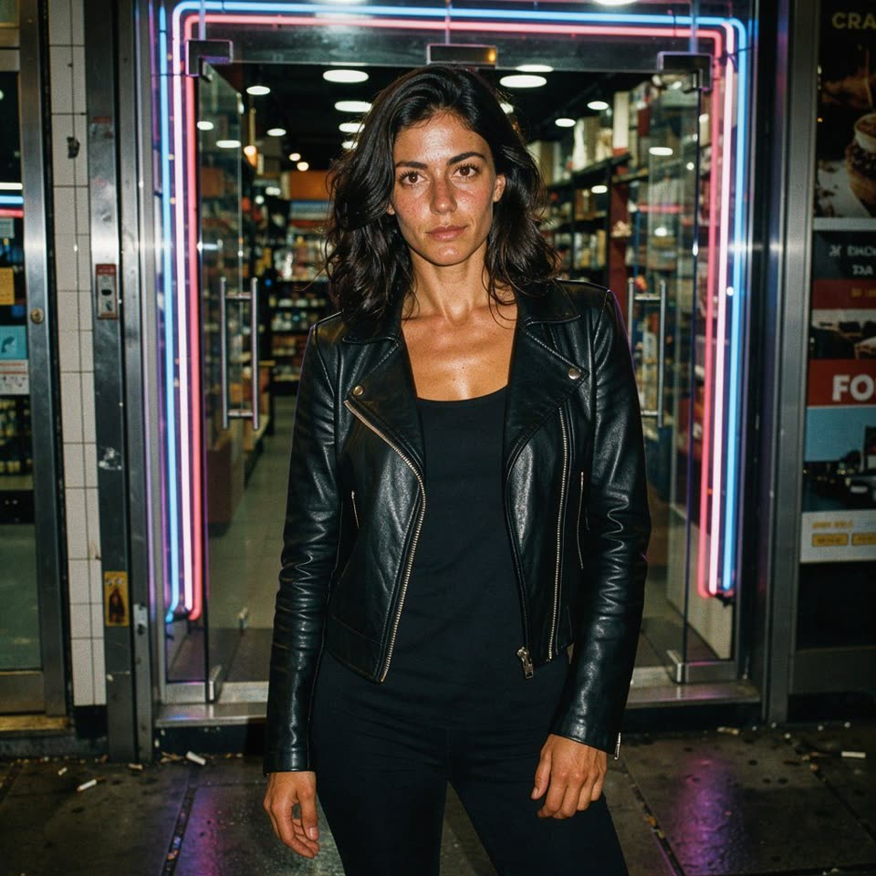

Flash street portrait, night skin texture
REA-013RealismPicsart AI Playground (two-model test)by Elian Iao (@elio_ia)2026-10-09

35mm-style on-camera-flash street portrait at night — testing flash falloff and real skin texture.
Prompt
#picsartpartner @picsart @picsartai Testing flash photography and night skin textures in Picsart AI Playground 📸✨ Same prompt, two different models: "Flash street portrait, 35mm candid photography. An attractive, athletic young woman with dark wavy hair wearing a fitted cropped leather jacket over a black top, standing in front of a neon-lit store entrance at night. Sharp direct camera flash creating high contrast and reflections, visible city pavement, authentic skin texture, subtle film grain, unedited raw look." 1️⃣ Flux 3 Image. 2️⃣ Seedream 5.0 Flash Which model nailed the harsh direct flash and authentic skin texture? Drop your pick below 👇 #PicsartAI
Tags: direct flash, skin texture, 35mm